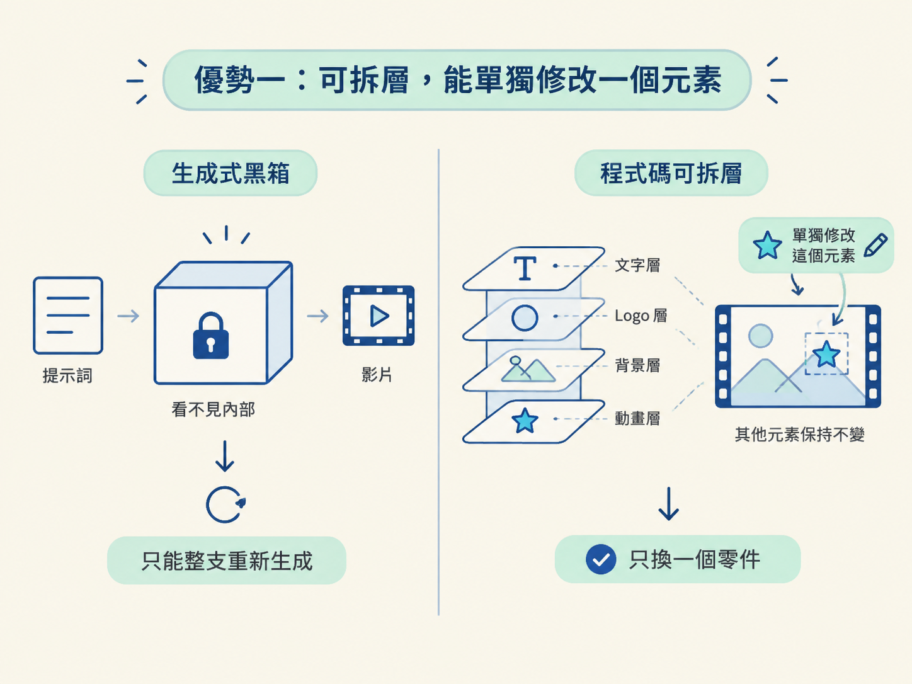
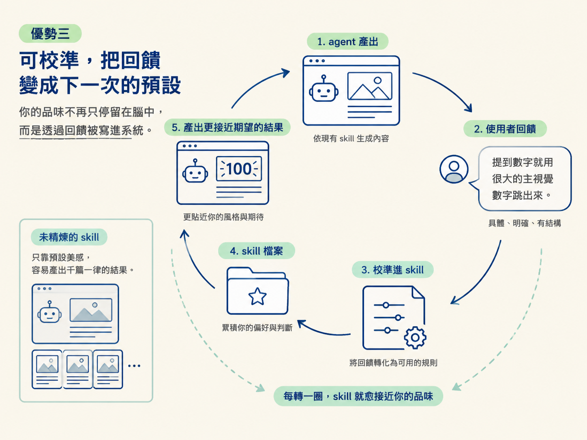

這一節要建立一個完整的心智模型：程式碼影片相較於生成式影片模型，為什麼有三個關鍵優勢：可以拆層、可以重複使用成設計系統與 skill，也可以透過回饋持續校準。最後你會看見，真正拉開差距的不是工具本身，而是你的 taste 與回饋機制。
上一節結束時，工作區裡已經留下母帶網頁、SVG 與素材。你可能還是會問：生成式影片模型也是「給它一句話，它給你一支影片」，這些差別真的重要嗎？反正觀眾最後看到的，都是成品。
答案會在下一次製作時出現。第一支影片或許看不出差異，但當你要做第十支影片，想讓所有作品看起來像同一個品牌，或只想修改其中一個小地方，兩種做法就會像兩條越走越遠的路。
這一節會把「影片是程式碼」這件事，換算成三個具體優勢。你也會看到，工具只是起點；最後真正拉開差距的，其實是你如何累積品味，並把品味變成可以重複使用的工作方式。
生成式影片模型比較像一顆黑箱：你輸入提示詞，它輸出一段影片。你可以重新生成，卻很難走進影片裡，只修改某個字，或把某段動畫往前挪半秒。整段影片像被黏成一塊，你通常只能接受結果，或是整支重來。
程式碼的邏輯正好相反。因為每一層、每一個元素都是分開寫的，你可以把它們拆開處理：單獨選取某個元素、暫時關掉其他圖層，仔細看它到底做了什麼。
這種「把畫面拆成獨立零件」的能力，是後續修改與重用的地基。就像修理一台可以拆開的機器，你知道每個零件在哪裡，也能只替換出問題的部分；黑箱則不會讓你看見內部，更不可能讓你只調整其中一個零件。

假設你調出了一套很喜歡的風格，例如乾淨的平面向量動畫。在黑箱裡，這套風格通常只存在於那一支影片中。下一次想做得相似，你只能重新描述一次提示詞，而且還不保證能得到同樣的結果。風格因此很難穩定複製，也很難累積。
程式碼沒有這個問題。既然風格是一組程式碼，你就可以請 agent 把它整理成一套設計系統，再把這套設計系統包進一個 skill。之後製作新影片時，只要呼叫這個 skill，就能自動套用你調整好的規則。
原本只用過一次的風格，於是變成手上可以反覆使用的資產，而不是做完一支影片就消耗掉的提示詞。
這個概念還可以繼續往外擴充。品牌配色、字體、常用版型，甚至你希望 agent 如何工作的規則，都能收進同一套系統裡。其中一種做法，是只維護一份指令檔，例如 agents.md，讓它成為唯一的設定來源。agent 每次開始工作時，都依照同一套規矩執行。
你累積的就不再只是提示詞，而是一套會愈用愈像你的工作系統。
這裡需要先分清楚兩種 skill。
第一種是未精煉的 skill：你只用一句話請 agent 生出來，它確實能運作，但依靠的仍是模型自己的預設美感。結果是，沒有經過精煉的人，做出來的作品往往長得很像，也就是俗稱的「vibe-coded slop」，看起來帶著一股通用的 AI 味。
第二種是精煉過的 skill。它和前者的差別，不一定在功能，而在輸出的品質。養成它的方法其實很樸素：先了解手上有哪些工具，再查看 agent 的產出並給出有結構的回饋，最後請 agent 把這次學到的東西校準進 skill 裡。
重複這個循環，skill 就會一次比一次接近你想要的樣子。回饋也不必是抽象的感覺，可以像對剪輯師說話一樣，逐句寫成明確規則，例如：「只要提到數字，就用很大的主視覺數字跳出來。」
關鍵在於，你的品味不再只停留在腦中，而是透過回饋被寫進系統。下一次 agent 開工時，帶著的就不只是模型的通用預設，還有你一路累積下來的判斷。

把這三個優勢放在一起看，關係就很清楚了：可拆、可重用、可校準，都建立在「影片是程式碼」這個前提上。
但如果每個人都有同樣的能力，勝負就不會停在工具上。
當每個人都能用一句話生出一支像樣的 showreel，真正的差異化只剩兩件事：你自己的 taste，以及你用什麼作業系統來工作、把回饋餵給模型。
工具會愈來愈強，預設成果也會愈來愈好看。但「什麼叫做好」的判斷，以及一套能把這些判斷穩定餵回去的流程，仍然不是模型可以替你決定的。
這也說明了為什麼這門課後面的重點，不是背熟一串提示詞，而是建立你自己的品味與回饋系統。提示詞像一次性的口頭交代；經過整理的 skill，則像一位愈來愈懂你的協作者。
程式碼影片的價值，在於它可拆層，能單獨修改一個元素；可重複使用，能把風格變成設計系統與 skill；也可校準，能把回饋寫進 skill。生成式模型像黑箱，難以檢視內部，也難以穩定複製風格。但工具終究會逐漸被拉平，真正的差異化是你自己的 taste 與回饋機制。
到這裡，「為什麼影片是程式碼」這個心智模型就完整了：影片是程式碼，程式碼接上一整條網頁工具鏈，最後留下的是一組可以重複使用的資產。這些特性共同服務一件事：把你的品味逐步系統化。
接下來，我們要把這個模型接上真正的工作區：安裝、設定，然後開始動手。